Sunbelt Rentals: VDOS
Introduction
Role
-
UX Research
-
UX Design
-
Visual Design
Tools
-
Figma
-
Sketch
-
Adobe Creative Suite
-
Marvel
-
Lookback
-
Miro
-
Sketch Pad
Deliverables
-
User Interviews
-
User Flows
-
Wireframes
-
High Fidelity Mockups
-
Iconography
-
Prototype
-
User Testing
Duration
-
3 months
The Problem
SUNBELT RENTALS
Sunbelt Rentals rents a variety of equipment especially for the construction industry. There are several internal applications that help them keep up with their rentals. In order to manage all of the deliveries and pickups, a dispatch software was created that allows dispatchers to assign these orders to their fleet of vehicles and drivers.
THE USERS
Dispatchers spend a lot of time trying to optimize their drivers’ schedules. They want to keep their delivery trucks full on the way out and keep it full with pickups on the way back. They remain very busy from 5 AM until 4 PM. They need a way to speed up their decision making, and even have quick suggestions to increase efficiency in their schedules.
The Solution
During a 3 month redesign discovery phase, I’ve determined the key features, layout, and information that needs to be displayed in order to equip dispatchers with everything they need for an efficient schedule. I’ve balanced this need with business OKRs to achieve both user and business objectives. I’ve studied our top performing dispatcher to decode how he makes decisions and what sets him apart. Every day he pushes the limit of what his fleet can handle for the day. How can I instill this same level of confidence in all users?
Instead of pushing these limits blindly, trip suggestions will be made, a trip building tool will be implemented, and finally a time estimation tool will help guide dispatchers in making decisions quickly.
Discovery
USER INTERVIEWS
Before: VDOS
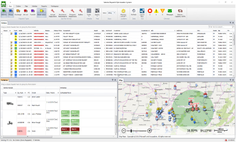White Board at the PC
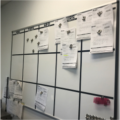- Automating a full day’s schedule at one time wouldn’t pair well with how the business currently runs. Dispatchers are constantly getting new calls from their sales representatives which shifts their plans every hour of every day. The system doesn’t even see the orders they are discussing over the phone, because this step is done in person and over the phone.
- Many stakeholders believed that schedules were not being optimized. Meaning, they felt that many drivers were not picking up equipment on the way back and not dropping off multiple deliveries at one time. The goal was to change this. What I determined was that dispatchers were optimizing as much as possible and always tried to fit as many orders as possible onto the truck. The problem wasn’t that they weren’t optimizing, the problem was that they were provided the information or tools to take it one step further.
- Dispatchers need to know when a driver is expected to be back at their Sunbelt location. This tells them when and what they should be planning for the driver next.
- Dispatchers are constantly keeping up with their driver, how many hours they’ve worked, and whether or not they have taken a break. This tells them how many driving hours they have left for the day and even the week.
- Dispatchers use two monitors, one with the map and one with the list of orders along with the schedule. This ability needed to be included in any future redesign.
- Dispatchers need easy access to the weight and dimensions of the equipment so they can plan what will fit on each type of truck.
- Since the current VDOS doesn’t give any detail around each delivery and pickup, dispatchers are manually renaming a delivery from ‘Run 1’ to ‘Charlie’s Construction’ or ‘19’ Electric Scissorlift’, for example. This helps them keep up with the deliveries and pickups. This information needs to be easily accessible on the schedule screen.
- Dispatchers will leave the software to open google maps to verify the route, and see if their truck can fit. The ability to see a street view is highly desired.
- There was a desire from stakeholders to provide dispatchers with as much information as possible about each piece of equipment. From my interviews, I determined what information they needed (weight and dimensions) and what information could be eliminated (inspection summaries).
Information Architecture
USER FLOWS
After conducting my user research and learning the necessary features based on users and competition, I put my user stories to work and designed the user flows needed for an MVP.
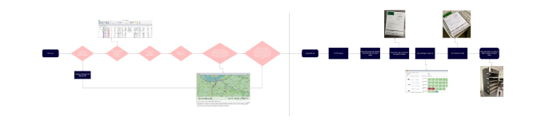 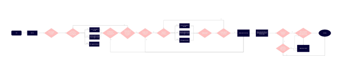WIREFRAMES
I started with sketching out my wireframes, iterating over several options for every screen that would be included in the MVP.
VDOS Schedule Screen
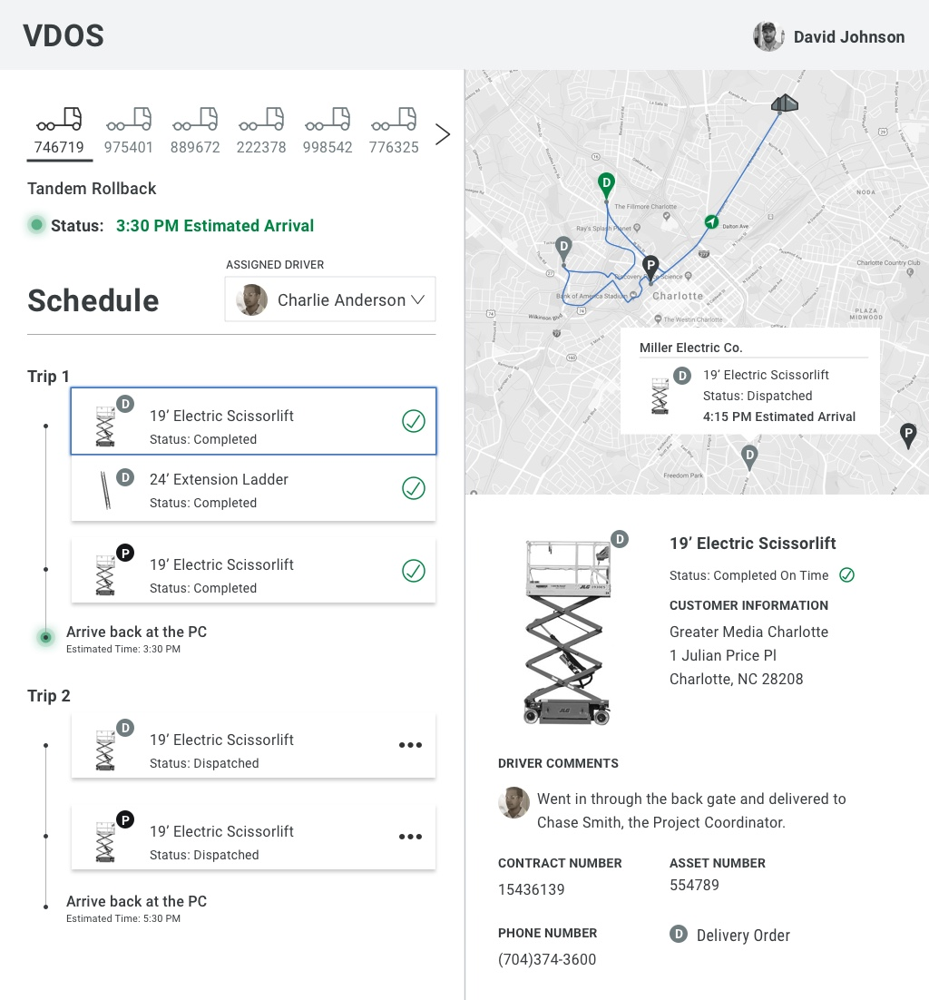Exception
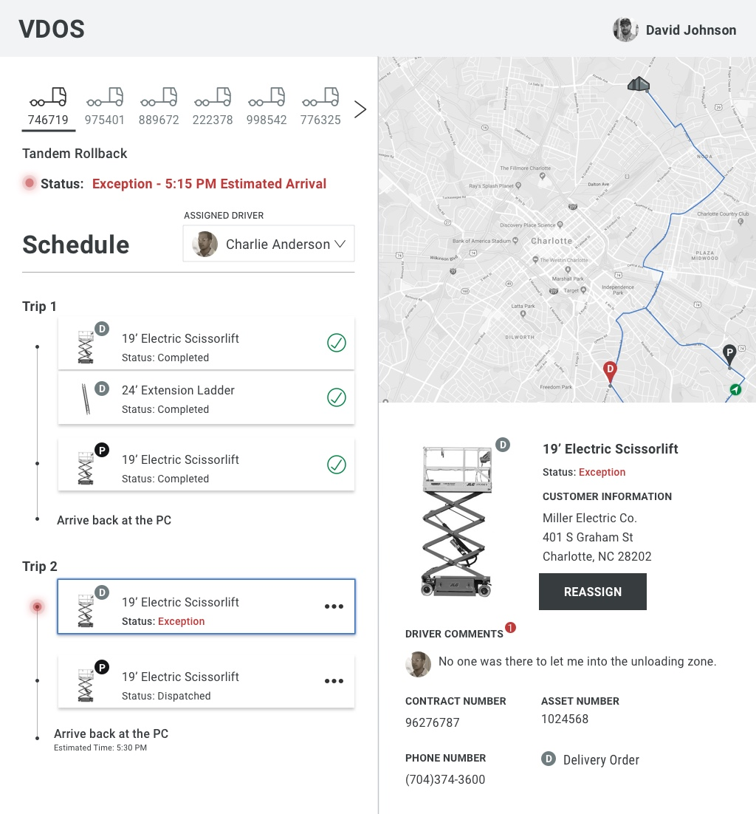Variation Two: Creating a Trip
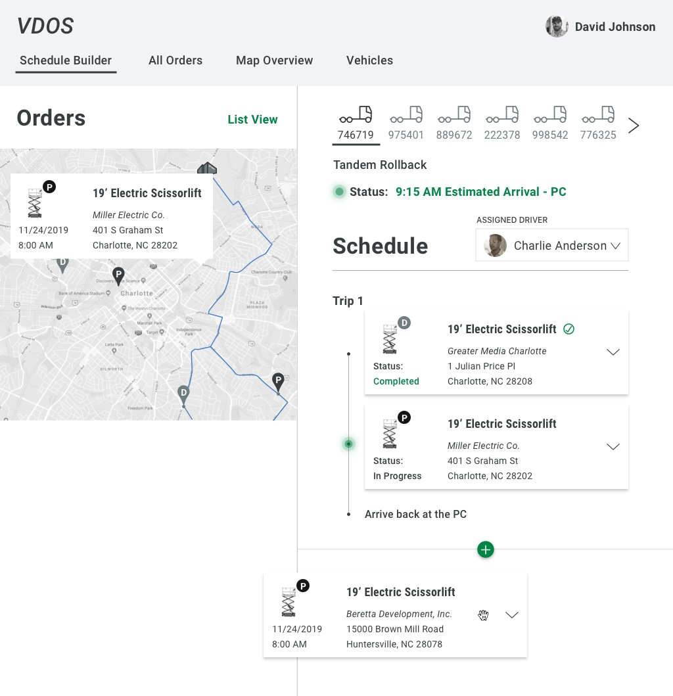- These variations incorporated the equipment name as a way to identify the run as well as the due date, time, and job site.
- When dispatchers click for more information, they can view other details that may be helpful in making decisions, such as weight and dimensions.
- A status is provided that let’s the dispatcher know what’s been completed, what’s in progress, when an exception has occurred, and what’s upcoming. This allows them to plan for future routes.
- In these variations we’ve introduced the concept of ‘Trips and Stops’. Oftentimes drivers are doing multiple deliveries and multiple pickups from different customers in one trip. In the old version of VDOS, dispatchers kept up with this grouping in their heads. This version allows them to quickly see each trip.
- Although infrequent, we’ve given them the ability to change the assigned driver for a vehicle. If a driver’s vehicle is in the shop or they are delivering a much smaller item, their dispatcher can quickly make that change and arrange their schedule.
Second Iteration
Vertical Schedule: Suggested Trip
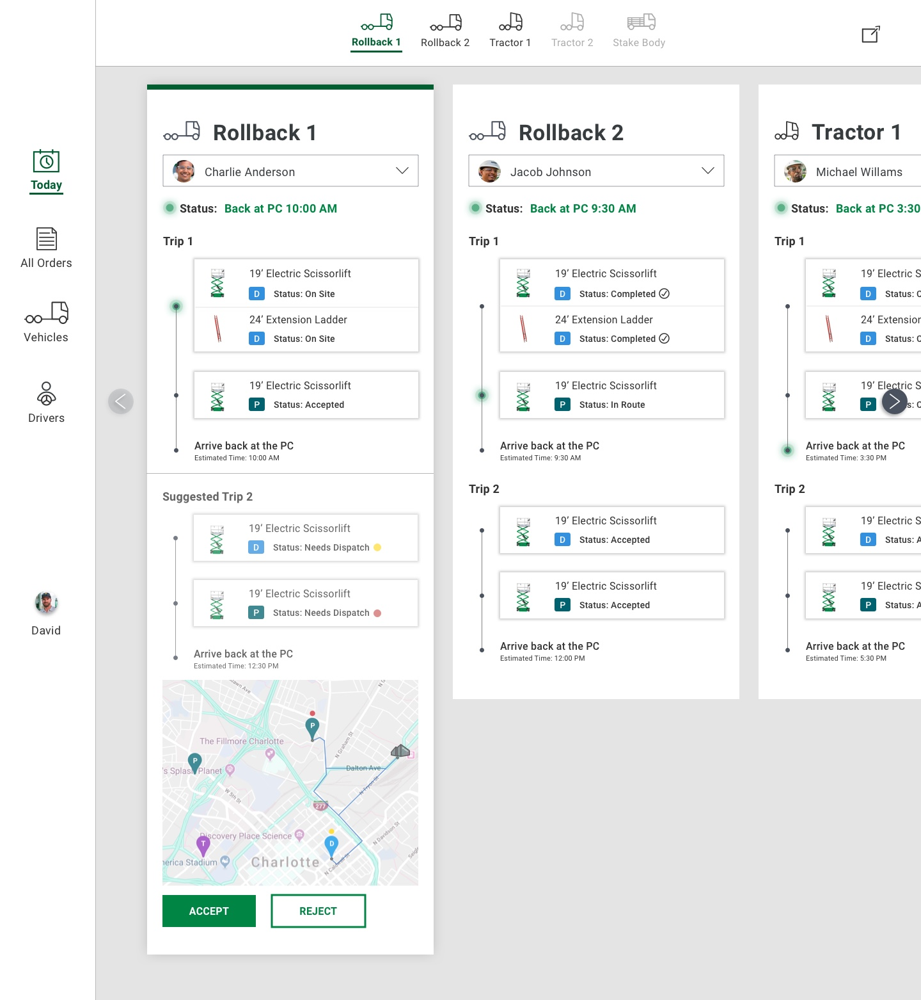Order List
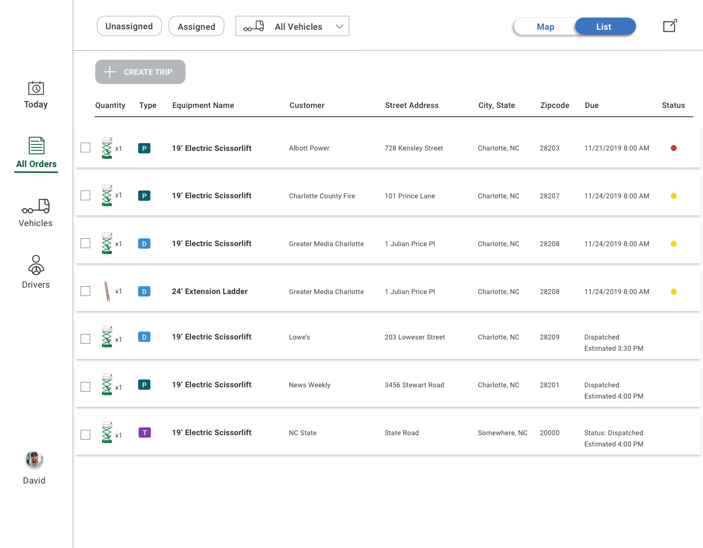- I still needed more exploration and feedback before prototyping and putting this in front of dispatchers.
- Stakeholders were interested in focusing more on automated routes that did most of the planning for the dispatchers. In this scenario I was able to explore more of a vertical layout that required less interaction while keeping the same information architecture needed by dispatchers.
- In order to allow for dispatcher control, I implemented an accept/reject feature for each predetermined route. This will allow for control over aspects that we may not be able to determine in the beginning such as driver location and distance preferences.
- I also began exploring the order list, prioritizing what information should be displayed in the columns based on user data.
- At this point I also pulled over elements from our new design system.
Visual Design
Third Iteration
Schedule
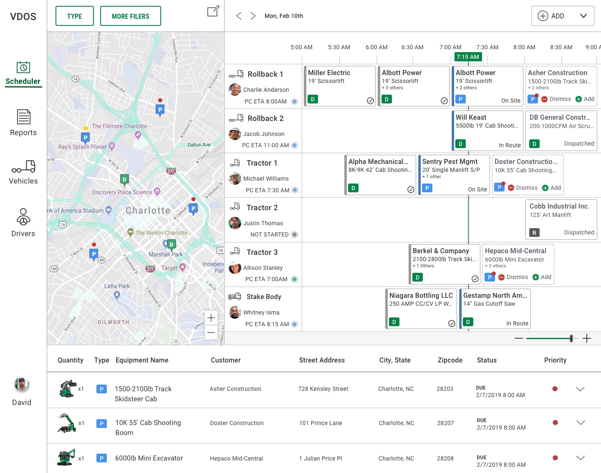Expanded Table
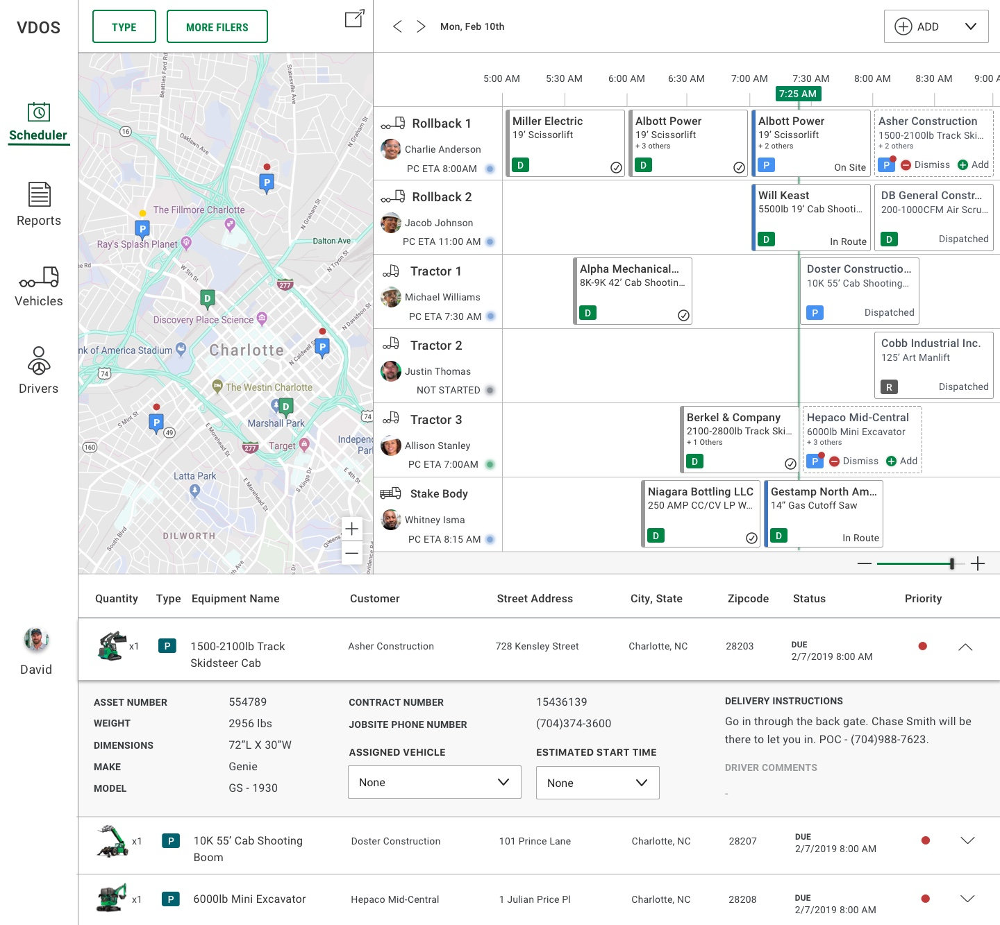Delivery Details
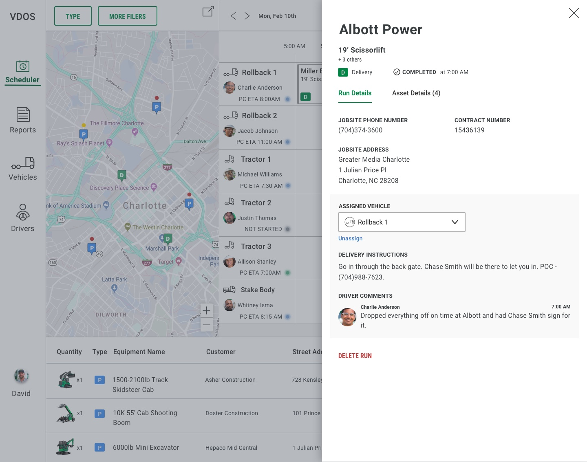Asset Details
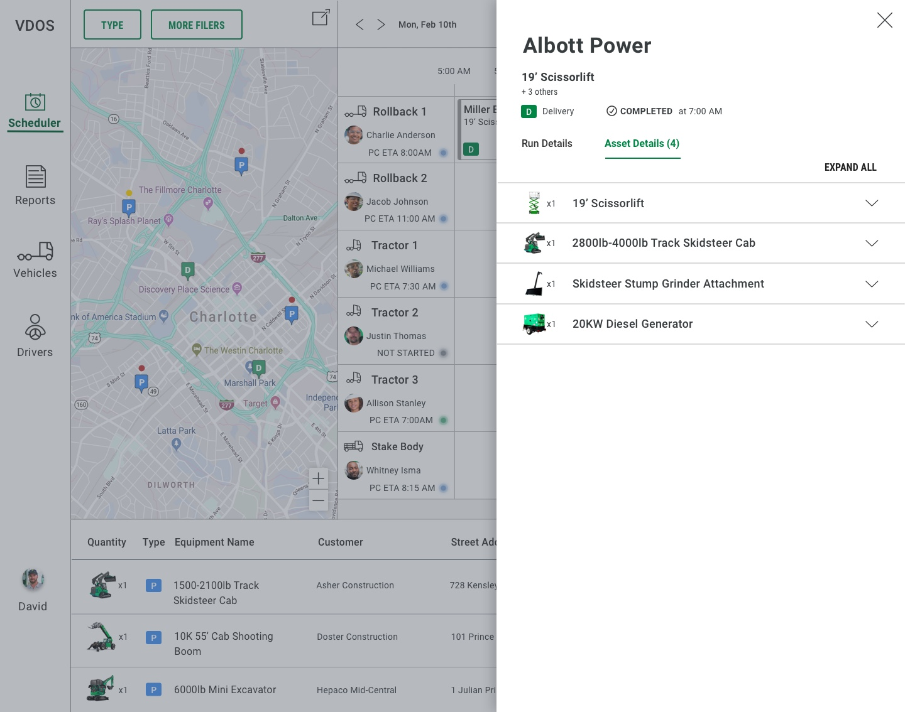Suggested Pickup
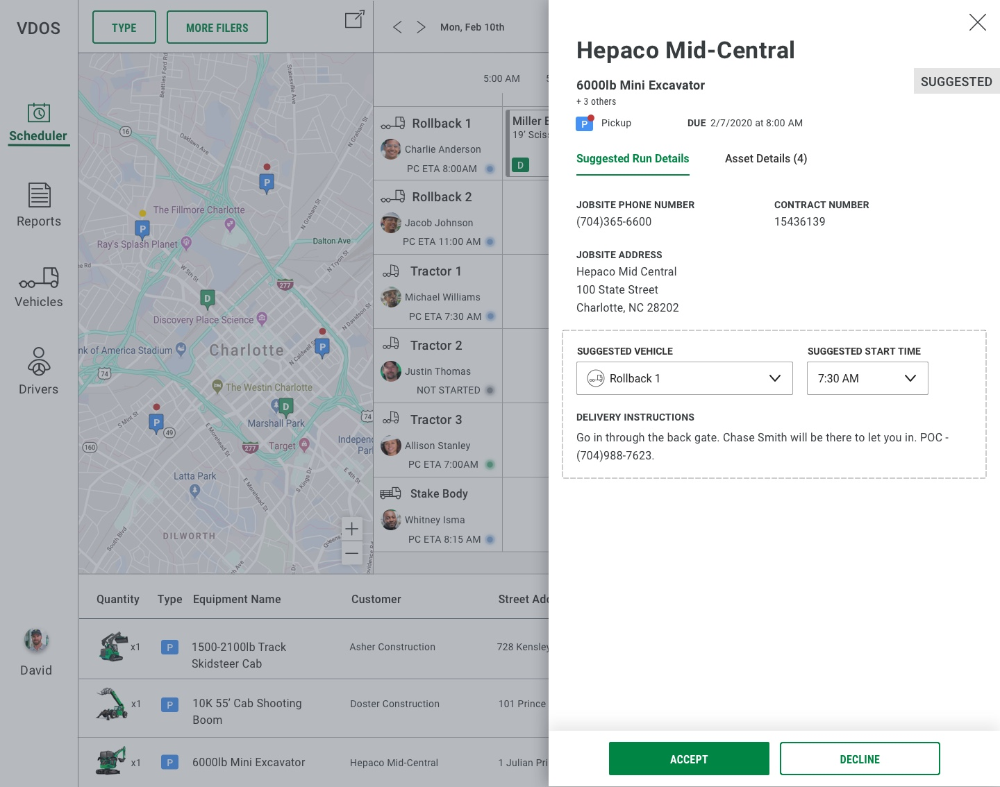Trip Estimation/Building Tool
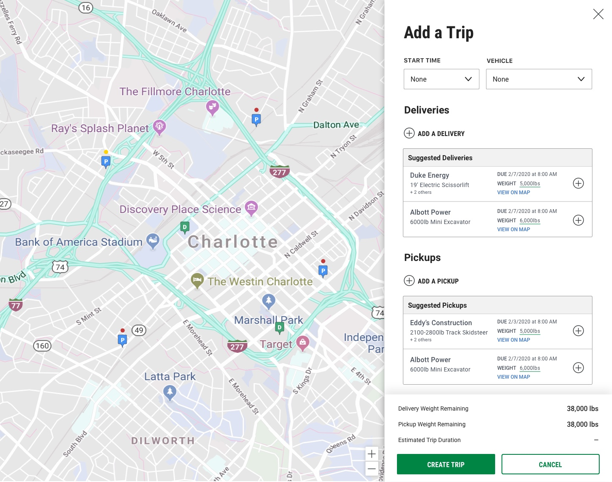- After further conversation with stakeholders, we realized that we wouldn’t have the capability to suggest entire trips. Instead, we could suggest pickups when users create delivery runs to help increase efficiency of the trips.
- What I realized is that the vertical, low interaction version works well for automated trips. The horizontal layout works best when dispatchers are creating trips themselves. Several stakeholders were set on introducing the vertical layout but I had to push for the horizontal layout after seeing how several dispatchers utilize the current software in action.
- After several of these observations, I also realized dispatchers really needed the ability to see both their schedules and the orders in one view. They pull the map into a separate screen in order to click and drag from it. In this design I allowed for all of those elements.
- After talking to new dispatchers in training, I learned that a lot of the inefficiency comes from them not knowing how long a trip will take and how much a truck can really hold. In order to accommodate for this need as well as our technical capabilities, I created an ‘Add Trip’ tool. This allows them to select deliveries and pickups to see how long it will take and how much weight they have remaining. As they select deliveries, the pickups will update accordingly.
- The ‘Add Trip’ feature along with suggested pickups on the schedules helps lead us in the direction of future efficiency gain so instead of losing money on delivery/pickup, we may be able to take a profit.
- At this point, I was ready to create a prototype and put this in front of dispatchers for usability testing.
USABILITY TESTING
After spending hours with dispatchers to understand their workflow, I was able to create real scenarios that would allow me to test the prototype. Below are some example scenarios from the script. View the full report to view details behind followup questions for each scenario.
- I still needed more exploration and feedback before prototyping and putting this in front of dispatchers.
- Stakeholders were interested in focusing more on automated routes that did most of the planning for the dispatchers. In this scenario I was able to explore more of a vertical layout that required less interaction while keeping the same information architecture needed by dispatchers.
- In order to allow for dispatcher control, I implemented an accept/reject feature for each predetermined route. This will allow for control over aspects that we may not be able to determine in the beginning such as driver location and distance preferences.
- I also began exploring the order list, prioritizing what information should be displayed in the columns based on user data.
- At this point I also pulled over elements from our new design system.
RECOMMENDATIONS
- Need to make the suggested runs visually distinguished from the scheduled runs.
- Need a way to instill trust in the users and show that this suggestion is the highest priority. There is a lack of trust in the system having a similar capability that the dispatchers have in prioritizing and making decisions.
- Filter labeled 'Type' should be adjusted to something like 'Run Type' instead. We should consider putting an additional filter above the order list, or making it more apparent that this is a filter for both the order list and the map of orders.
- There is not enough information about what to display on the run. Account number may be more relevant but would have to be determined through a survey.
- Total weight calculation shown on the suggestion panel should be carried over to all run panels.
- When clicking the delete/information button on an exception, we should show the exception type above the action to delete. May need to just change this to an 'i' icon for information.
- The drivers section should have the 'driver profile', medical and records to make sure they are up to date. How long they have been on the road, if the driver has taken lunch, etc. Would need to gather more information through the survey.
- The vehicles section would allow them to see the weight rating, who is driving it, inspection times, a report on the vehicle. Would need to gather more information through the survey.
VERTICAL/HORIZONTAL EXPLORATION
The horizontal/vertical combo layout would have to be explored to determine its usability when manually building out schedules/runs. This layout would be best for business goals as well as for automated manifests. In this version dispatchers can still see how the runs are going from a glance, driver details and statuses, and a full list of runs along with visually apparent suggestions that they can add or dismiss. Dragging and dropping from the map is an easy option with this layout, it allows for more room to see everything they need to see.
Exploration Concept
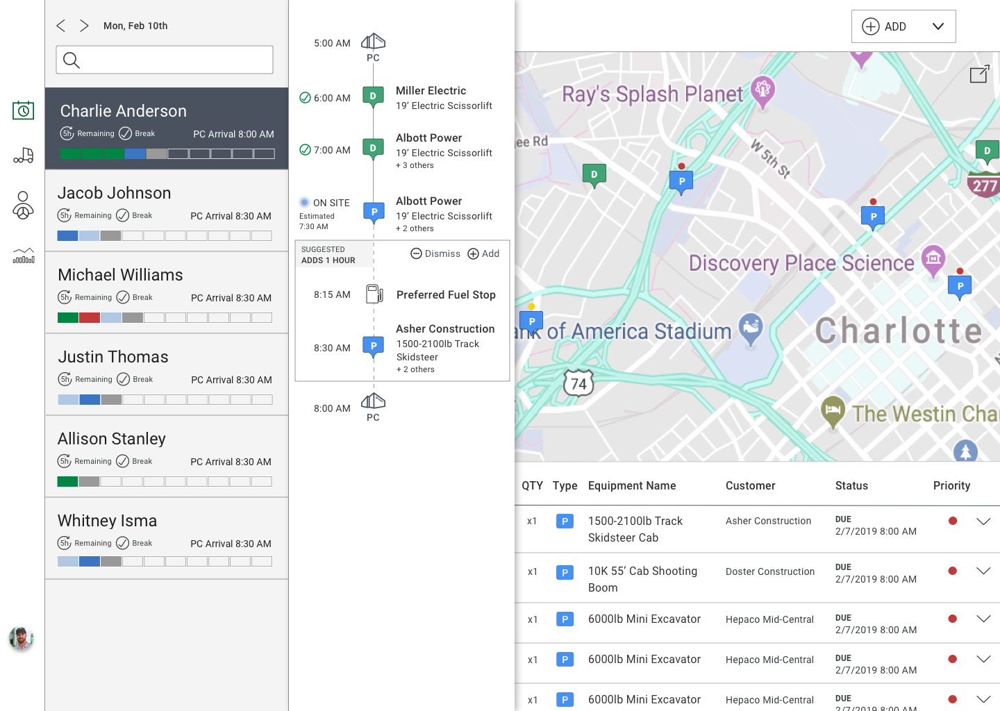Reflections
- In the end, this project couldn’t move forward due to lack of funding.
- If I were to pick it back up, I would launch the dispatcher survey that I had created on Survey Gizmo. I had determined some barriers with getting the survey to the right people. I would begin working on how to solve those issues.
- I would explore the vertical/horizontal combo layout that I created in the end to determine its usability.
- Looking back, this was a very conceptual and isolated effort done by a small group. I worked on the desktop version of VDOS with dispatchers being the user base. Another designer worked on the mobile version which was actually designed for drivers that had the assigned schedules. If I could rethink our workflow, I would have involved the developer that has spent a lot of time creating the current VDOS. This would help us determine feasibility, and even generate new ideas from someone that’s very involved in the technology.
- There’s a lot of sensitivity and lack of trust when it comes to adapting to changes made to VDOS. Given proper funding and the team to design, research, and develop, I would want to explore a fully functioning MVP in order to properly determine it’s usability before moving forward with a production ready software.